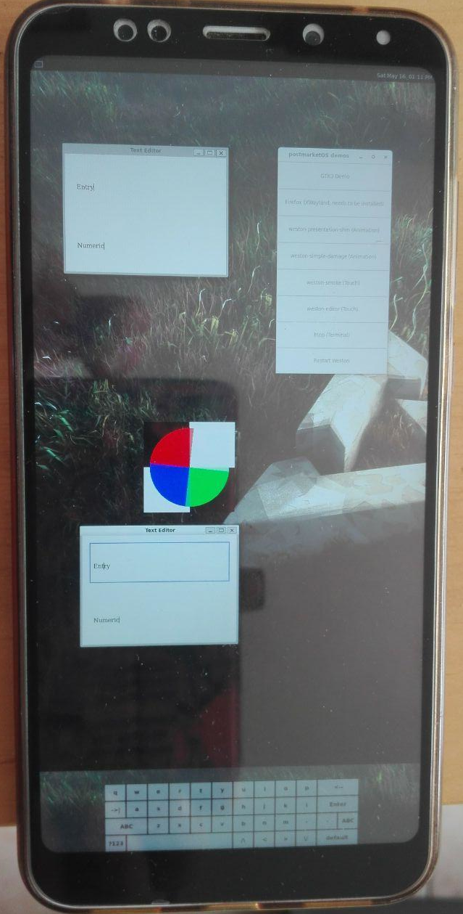

Xiaomi Redmi Note 5 Plus (xiaomi-vince)
|
 Xiaomi Redmi Note 5 / 5 Plus | |
| Manufacturer | Xiaomi |
|---|---|
| Name | Redmi Note 5 / 5 Plus |
| Codename | xiaomi-vince |
| Released | 2017 |
| Category | testing |
| Original software | Android 8.1 |
| postmarketOS kernel | 4.9.308 |
| Hardware | |
| Chipset | Qualcomm MSM8953 Snapdragon 625 |
| CPU | Octa-core Cortex-A53 2 GHz |
| GPU | Adreno 506 |
| Display | 1080x2160 (403 PPI) IPS |
| Storage | 32/64 GB |
| Memory | 3/4 GB |
| Architecture | aarch64 |
{kind=link}
| USB Networking |
Works
|
|---|---|
| Flashing |
Works
|
| Touchscreen |
Works
|
| Display |
Works
|
| WiFi |
Works
|
| FDE |
Partial
|
| Mainline |
Broken
|
| Battery |
Works
|
| 3D Acceleration |
Broken
|
| Audio |
Works
|
| Bluetooth |
Broken
|
| Camera |
Broken
|
| GPS |
Broken
|
| Mobile data |
Broken
|
| SMS |
Broken
|
| Calls |
Broken
|
| USB OTG |
Works
|
| NFC |
Unavailable
|
| Accelerometer |
Broken
|
|---|---|
| Magnetometer | |
| Ambient Light | |
| Proximity | |
| Hall Effect | |
| Ir TX |
Broken
|
|---|---|
| TrustZone | |
|
This device is based on Snapdragon 625. See the SoC page for common tips, guides and troubleshooting steps |
Maintainer(s)
- M0Rf30
Users owning this device
How to enter flash mode
- Turn off the device
- Press Power + Volume Down to enter fastboot
Installation
Here's how to boot pmOS via fastboot:
- Install to a SD card with
$ pmbootstrap install --sdcard=/dev/sdX
- Insert the SD card into the device
- Connect the device to your PC
- Enter the fastboot mode
- Finally, boot pmOS:
$ pmbootstrap flasher boot
or
- Enter the fastboot mode
- Flash system
$ pmbootstrap flasher flash_system
- Flash kernel
$ pmbootstrap flasher flash_kernel
- Finally, reboot into pmOS:
$ fastboot reboot
Audio
To enable audio you need to install triggerhappy. You can do it in many ways:
As a flag during PMOS installation:
Follow the standard Installation guide, and during pmbootstrap install step, use --add triggerhappy flag
As a package on running device:
Type in device terminal: $ sudo apk add triggerhappy
On both cases you always need to enable the triggerhappy daemon with: $ sudo rc-update add triggerhappy default
|
FDE
Encryption works fine, but osk-sdl has some issues with pixelformat modes.
I recommend to test Unl0kr, because its made on LVGL, so it shouldn't have the same problems that osk-sdl encounters with directfb SDL2 backend.
Actually, osk-sdl is working ok(ish) with pixelformat argument set in DFBARGS to ABGR, but I couldn't get this to work in initramfs and I don't think it is a proper way to do this. |
Parts
Smart Speaker
To use the speaker, the device relies on:
| Vendor | Model |
|---|---|
| Texas Instruments | tas2557 (some useful commits 1)
Seems to be very similar to tas2559 |
Fingerprint
Two drivers are available within downstream kernel
| Vendor | Model |
|---|---|
| Fingerprint Cards AB | FPC1020 (some useful commits 12) |
| Goodix | GF3208 |
Sensors
| Type | Vendor | Model |
|---|---|---|
| Accelerometer / Gyroscope | STMicroelectronics | LSM6DS3 |
| Magnetometer / Compass | Asahi Kasei | AK09918 1 |
| Ambient Light | Liteon Opto | LTR579 ALSPS |
| Hall | ROHM Semiconductor | BU52061NVX |
Serial UART
Getting UART output on this device should be pretty straightforward, because pins for serial transfer (TX and RX) are exposed directly on motherboard and are even labeled.
{kind=link}
{kind=link}
See also: Serial debugging